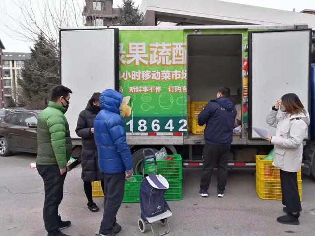
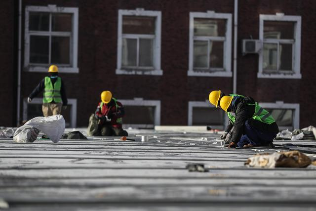
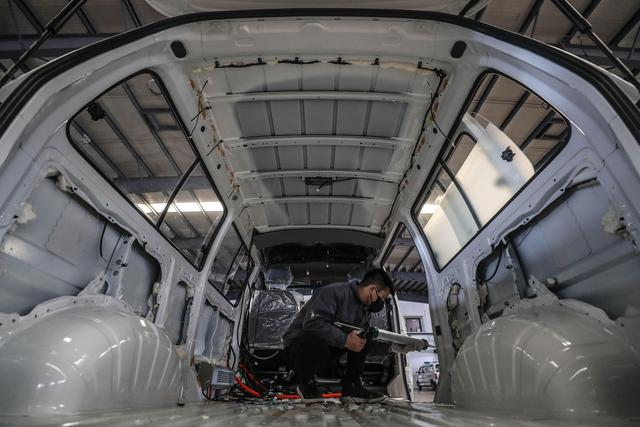
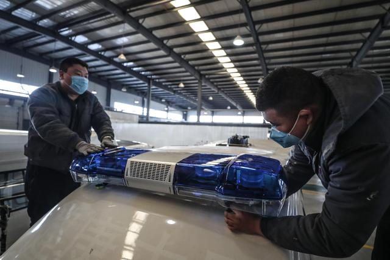

沈阳市浑南区一处居民小区里，退役军人组成的义务送菜车队把新鲜蔬菜送到小区里，为市民提供便利。新华社记者孙仁斌 摄
新华社沈阳2月7日电（记者陈梦阳 孙仁斌 白涌泉）春节前，一对从湖北武汉到鞍山旅行的母女被安置在当地一家酒店里隔离观察。了解到这对母女在鞍山无亲无故，已经停业的酒店保留了厨师、安保等8名工作人员为她们服务。
“作为中国人，我们有帮助同胞共渡难关的责任。”酒店总经理刘斌说。
在中国各界全力抗击新型冠状病毒感染的肺炎疫情的当下，这样的温情故事每天都在上演。

工人在辽宁首个挂牌成立的新型冠状病毒感染的肺炎患者集中救治中心——沈阳市第六人民医院进行扩容工程。新华社记者潘昱龙 摄
春节假期，安徽省安庆市第一人民医院副护士长张敏加入当地组织的医疗队，奔赴武汉疫区支援。行前，女儿抱住她，哭着不让妈妈走。张敏忍住泪水，告诉女儿：“妈妈要去打怪兽了，很快就回来……”
在公共卫生危机来临时，中国的医护人员一次次地诠释着“医者仁心”的大爱。面对肆虐的新型冠状病毒感染的肺炎疫情，中国各地支援的队伍一拨又一拨开赴重灾区。国家卫健委统计，截至2月3日，已累计派出56支医疗队、6882人到湖北开展医疗救治工作。
医护人员义无反顾的身影鼓励着众多普通民众挺身而出，承担起帮助他人、共克时艰的重任。

工作人员在沈阳华晨汽车专用车生产基地生产用于抗击疫情救护车。新华社记者潘昱龙 摄
在山东，菜农们连夜从大棚里摘下数百吨新鲜的蔬菜，无偿捐赠给武汉市民；在重庆，众多志愿者自愿服从社区干部的安排，成为社区抗疫一线的生力军；在江西，许多群众自发向奋战在防控一线的基层干部、医护人员赠送口罩、酒精等防护用品……
面对疫情，中国民众表现出自我克制和负责的态度，以换来他人更多的理解和关爱。
日前，一户从湖北老家返回浙江省嘉兴市南湖区云东社区的居民第一时间自我隔离，并向所在社区和邻居们通报。邻居们则以各种各样的方式向这户人家表达关心并提供帮助。

工作人员在沈阳华晨汽车专用车生产基地生产用于抗击疫情救护车。新华社记者潘昱龙 摄
无论是汶川地震，SARS疫情，还是这一次的新型冠状病毒感染的肺炎疫情，在每一次灾难中，都能看到中国普通民众平凡却伟大的善举。涓滴细流汇聚成强大的凝聚力，托举起这个国家前行的希望。
“疫情让我们被隔离观察，暂时不能回家。但大家的互帮互助，让我们感受到大家庭的温暖，也增强了战胜疫情的信心。总有云开雾散的时候，我会记住这里，会记住这里的人们，这是我的第二个家！”在鞍山被隔离的武汉母女在电话里对记者说。